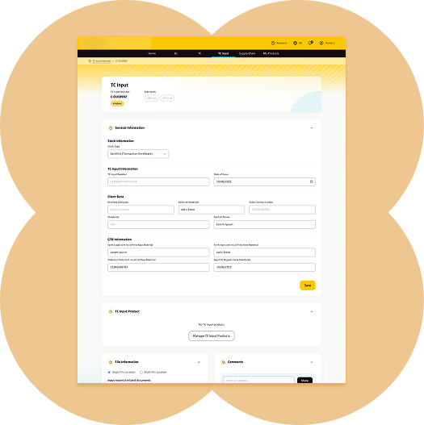
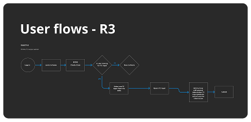
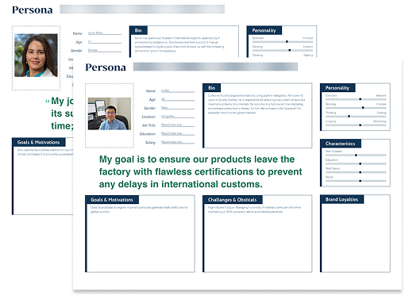
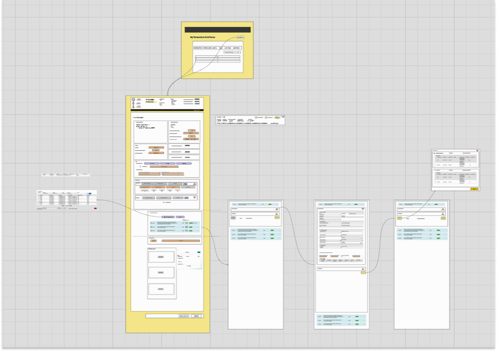
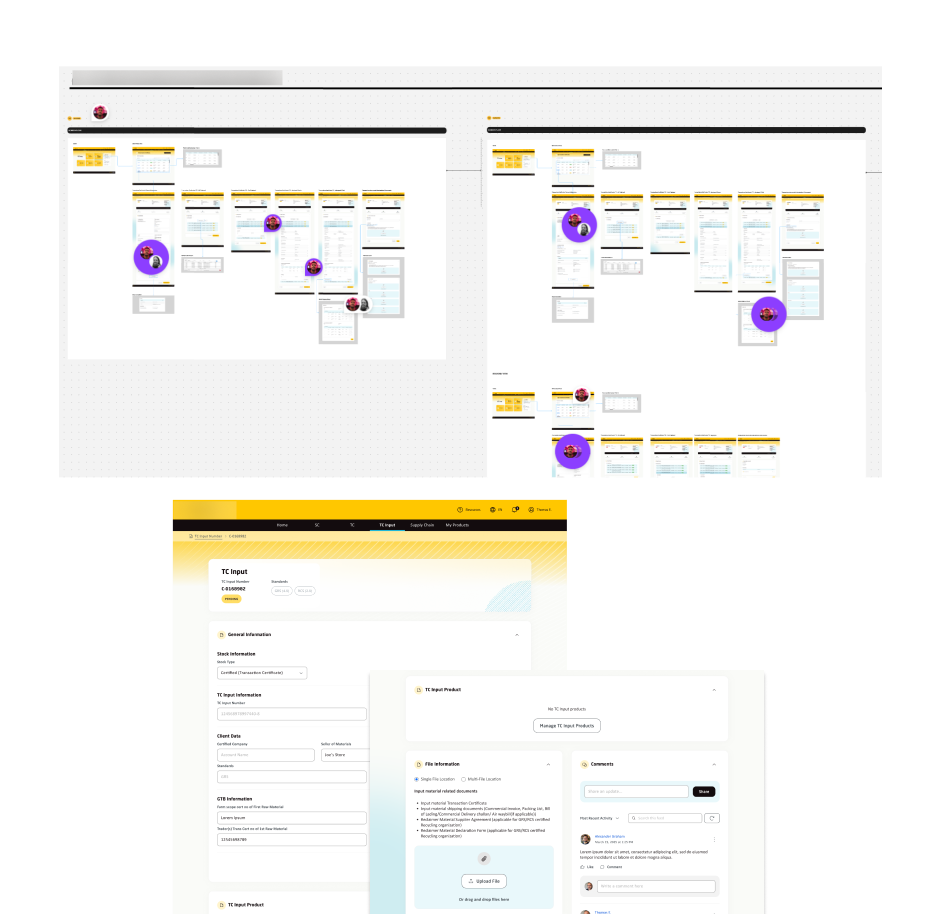

ChainSync
2025
This is a platform that helps organizations track and verify sustainable material claims throughout their supply chain. This process is critical for business compliance and brand trust.
Role
As the UX/UI Designer for this critical feature, my role was to design the end-to-end user interface for the Transactional Certificate Output flow.
Responsibilities
- Designed and validated the complete solution during an intensive, one-week rapid-design workshop for business alignment.
- Translated complex requirements into simple journeys while adhering to strict Salesforce Lightning Design System constraints.
- Architected rapid information systems, streamlining dozens of complex data fields into intuitive, logical screens.
- Led high-speed user flow creation and iterative UI design to secure final stakeholder validation.

Stage 1: Understanding the process and personas definition
Defining the flow
Creating the user flow to gain deeper insights into the end-to-end user journey.

User personas
Defined two primary user personas to align platform functionality with core business objectives.

Stage 2: Wireframing
Objective
Creating a robust information hierarchy tailored to complex user journeys and distinct persona needs.

Stage 3: Review and Hi-Fi Prototype
Objective
- Validate the coherence of functionalities from different users
- Validate the design and usability of the flow

Challenge
Working within the strict rules of Salesforce (SLDS) was a major challenge. I had to find creative ways to keep the app simple for users while following all the technical requirements of the platform.
Impact
My design, delivered from concept to flow in one week, provided a seamless UX for a complex task. By breaking the flow into logical steps and adhering to SLDS, my solution reduced cognitive load and minimized data-entry errors, enabling organizations to reliably track sustainable material claims.
Learnings
This project taught me that in complex global trade, a familiar visual style is the best way to build trust quickly. Keeping things simple is the most powerful tool a designer has.